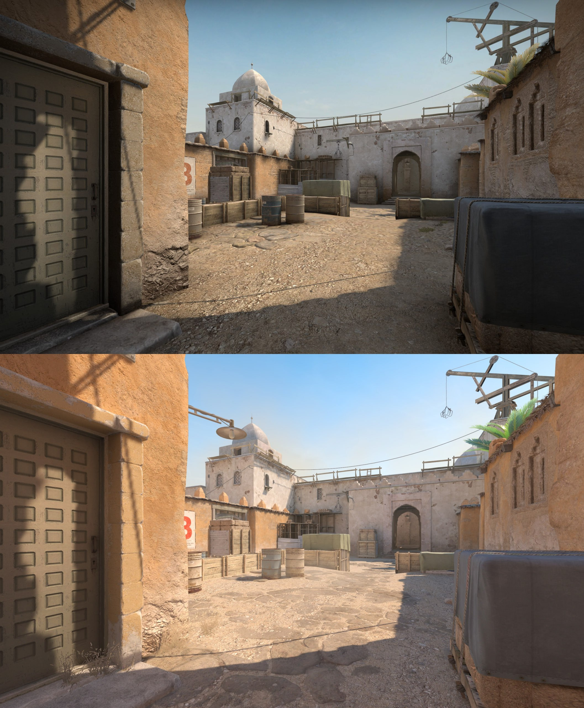

Los mapas renovados se han reconstruido completamente desde cero aprovechando todas las nuevas herramientas y características de renderizado de Source 2.
Mapas clásicos con bases sólidas que los jugadores pueden utilizar para evaluar los cambios en la jugabilidad de CS:GO a Counter‑Strike 2. Incluyen mejoras en la iluminación y la legibilidad de los personajes, pero por lo demás no se han modificado.